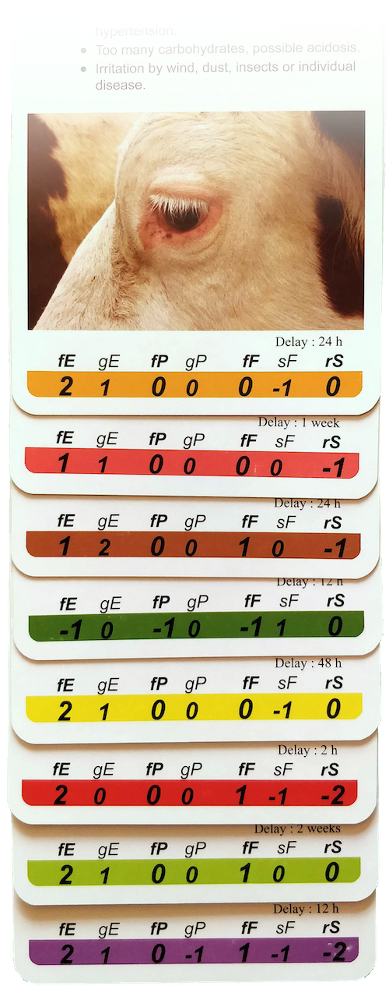

About Obsalim

example cards for goats
Obsalim is a unique method of assessment and ration adjustments, based on observing your cows, goats and/or sheep. It helps you better read your animals, to understand how they are digesting the ration in real time. It uncovers the subtle issues that are generating problems, and reveals opportunities to reduce input costs and turn losses into profits.
Obsalim helps you answer questions such as:
- How are my cows, sheep or goats eating and digesting the grass or the ration?
- Why is there a gap between what the ration sheet predicts and what they are actually producing?
- How can I close this gap?
- Are they getting enough or too much energy, protein and/or fibre?
- How can I improve the overall health of my herd?
You’re already looking at your animals to see how they are doing. Obsalim will make your observations more precise and actionable:
example cards for cows
scores to add up
1. Observe
Obsalim comes in the form of a set of cards. Each card relates to an observable sign on or around the animals, such as behaviour, condition, dung and other symptoms. The first step of the technique is to observe your ruminants for such signs, and select the cards which match your observations.
2. Evaluate and act with confidence
Next, you add up the values displayed on the cards you selected. This reveals what is happening in your animals’ rumen and diagnoses any imbalance or inefficiency in the rumen. The cards will not only tell you if there is room for improvement, but precisely which areas can be improved. Equipped with this knowledge, you can adjust your ruminants’ feed and routines, to improve welfare and productivity.
The cards will also tell you how long it takes for the various Obsalim signs to appear or disappear. So you can monitor how your animals are responding to the changes you make in real time. This gives you the confidence to make decisions about the ration, without risk-taking.
The relevance of each sign to the rumen function of cows, sheep and goats has been determined and verified in practice for more than two decades.
3. Increase productivity, save time and reduce costs
As you get used to the Obsalim technique, it will take you very little time to monitor the efficiency of rumination in your herd on a regular basis. You will understand how to increase the productivity of the rumen, while reducing food wastage and any related input costs. And you will be able to spot and address early signs of disruption, avoiding time and money spent on dealing with a variety of health issues.
In time, your animals will prove to be the best guide to running your farm efficiently.
Examples of the Obsalim technique in action
Using the Obsalim technique and tools, you might observe that your cows are wasting energy. And you recognise that the root cause is a shortage of structural fibre in their feed. You can then address this issue by adjusting the ration to increase productivity.
In another example, you might observe that your sheep are overeating and wasting a proportion of the ration due to an abnormal eating pattern. By discovering this fact, you can take appropriate action to reduce your losses. Without conducting the Obsalim observation, it is unlikely that the abnormal eating pattern would have been noticed.
Visit the Obsalim website